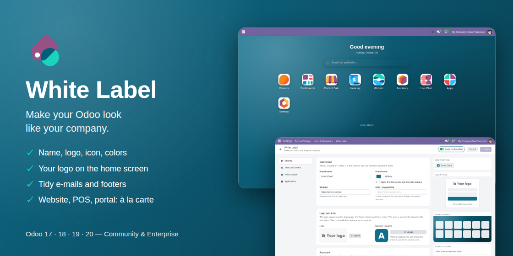

Requires White Label Branding (installed automatically). Nothing changes until “Apply my branding” is switched on in Settings > White Label; switching it off brings back the standard look.
Enable it from the White Label dashboard (Applications tab). It never installs the application itself.
Odoo 17, 18, 19 and 20 · Odoo's copyright notice and the Enterprise subscription checks are left untouched.